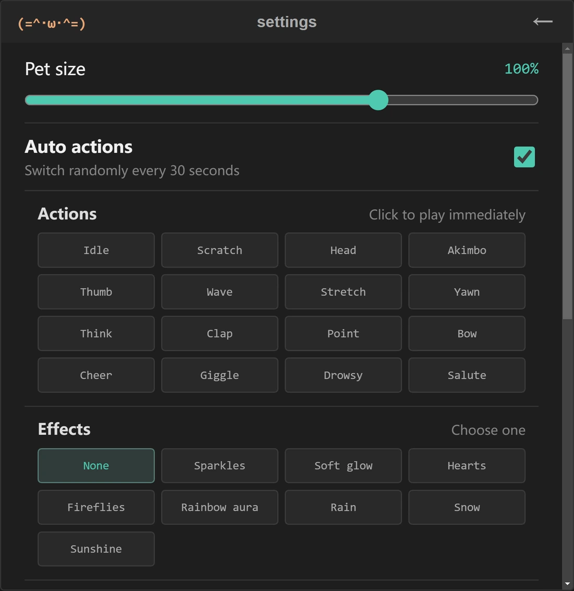

一只住在桌面右下角的
待办宠物
C.pet 是一个透明置顶的小桌宠。点它一下，弹出待办清单；写完关掉，它继续在角落里挠头、打哈欠、竖大拇指。 还顺手做了系统监控和一个本地工具启动器。
00这是什么
先说清楚它不是什么：它不是那种会满屏乱爬、狂弹窗、还带广告的桌宠。它安静地待在屏幕右下角， 只在你想记东西的时候出现——更接近一个"长成小人样的便签"。
▸点一下就开始记
点宠物 → 待办面板弹出；再点宠物或按 Esc 之外的地方它就收起。写完直接关，不用保存——每一键都实时落盘。
▸不抢焦点
窗口无边框、透明、置顶但不激活。你在写代码、看文档时，它不会突然跳到最前面打断你。
▸能躲进任务栏
按住 Shift + ↓，宠物会滑到任务栏后面只露一小截头；想看它再按 Shift + ↑。
▸数据不联网
所有待办、设置、完成记录都在你自己电脑的 %APPDATA%\c-pet 里，没有任何账号、云同步或遥测。
宠物形象来自作者本人自画像的卡通化版本——所以它戴眼镜、穿白 T 恤，动作也有点像真人。
01下载 & 安装
只有一个 exe，下载下来双击就行，没有安装向导、不写 Program Files、不需要管理员权限。
下载 exe
点这个链接：C.pet.exe（约 80 MB）， 或者在 Releases 页面选版本下载。文件是 64 位 Windows 的免安装包。
放到一个固定位置
比如 D:\Tools\C.pet\C.pet.exe。宠物会把自己旁边的 C.pet.lnk 和任务栏固定快捷方式都指向这个路径，
所以以后别再移动它，否则固定快捷方式会失效（重新双击一次 exe 就会自动修好）。
双击运行
第一次打开大约需要 1 秒，然后右下角出现宠物，任务栏多一个图标。就这么简单——没有第 5 步。
第一次运行 Windows 可能弹「Windows 已保护你的电脑」。这不是报毒，而是因为作者没买代码签名证书（一年几千块）。 点「更多信息」→「仍要运行」即可，之后不会再弹。
想自己核对：文件大小约 80 MB，SHA-256 可以在 Releases 页面对照。
卸载 = 删掉 exe。想连数据一起清掉，再删 %APPDATA%\c-pet 文件夹（Win+R 粘贴路径直接打开）。
02五分钟上手
三个动作就能用起来：点宠物、写一行字、点 ✓。剩下的功能慢慢再探索。
点一下宠物
待办面板会出现在屏幕正中。第一次打开时里面已经有一行空白条目，光标就在那儿，直接打字。
回车继续加
按 Enter 在当前条目下面新建一行；在空行按 Backspace 删掉这一行。
点 ✓ 完成
条目会滑进「completed database」，底部弹出 8 秒的撤销提示。手滑了？点 Undo 就回来。
再点一下宠物，收工
面板收起，宠物继续待在角落里。下次按 Ctrl + . 可以直接把面板叫出来，不用去点宠物。

03桌宠交互
拖、滚、点、按键——四种手势覆盖了宠物的全部玩法。
◈拖动移动
按住宠物任意位置拖动。松手后位置会记住，下次开机还在原处。可以拖到第二块屏幕。
◈滚轮缩放
鼠标悬停宠物上下滚：20% ~ 135%，实时生效。设置里也能用滑块调，或一键「Reset to minimum size」。
◈微调位置
点一下宠物或面板后，按 Shift + 方向键，每次挪 4px。只在 C.pet 聚焦时生效，不会抢别的软件的按键。
◈躲进任务栏
一直按 Shift + ↓ 可以把宠物滑到任务栏后面，只露出头；按 Shift + ↑ 出来。
15 个动作与 9 种特效
默认每 30 秒随机换一个姿势：Idle、Scratch（挠头）、Head（摸头）、Akimbo（抱臂）、Thumb（竖大拇指）、 Wave、Stretch、Yawn、Think、Clap、Point、Bow、Cheer、Giggle、Drowsy、Salute。 关闭「Auto actions」后它就安静地待着不动。
特效是在宠物身上叠一层 CSS 粒子：Sparkles、Soft glow、Hearts、Fireflies、Rainbow aura、Rain、Snow、Sunshine。 它们纯装饰、几乎不占 CPU，适合截图。
检测到你进入全屏（游戏、全屏视频、演示模式）时，宠物会自动隐藏；退出全屏后自己回来。
04待办清单
两套互相独立的列表：To Do 放正经事，Idea 放随手想到的点子。
标题栏右边那个显示 Idea 的按钮，就是切换过去的意思。
编辑方式
- 直接点条目文字就在原地编辑，输入即保存——没有"保存"按钮这回事。
- Enter 在下方插入新行，Shift + Enter 在条目前换行。
- 条目为空时 Backspace 删除该行（最后一行会留着，不会删空）。
- 面板高度随内容自动伸缩，最多到屏幕高度为止。
完成 & 撤销
点右侧 ✓ 会把条目归档：从当前列表消失，写进 completed database（带来源列表和完成日期）， 同时底部弹出 8 秒的 Undo。8 秒后提示消失，但记录还在数据库里，随时能翻。
快捷链接
面板底部那一排按钮是常用网址，默认是作者自己的三个项目页。点 + 添加自己的： 名字最多 24 字符，URL 必须是 http/https。点开链接会用 Microsoft Edge 打开，不会在宠物窗口里加载网页。
待办数据存在浏览器的 localStorage 里，跟着 exe 所在的 Windows 用户走。换一台电脑不会同步——想搬数据就复制 %APPDATA%\c-pet。
05系统监控
标题栏那个小窗口图标进去就是 Monitor。每 0.45 秒刷新一次，每张卡片带一条迷你趋势曲线， 颜色随负载从绿变黄再变红。

| 指标 | 数据来源 | 说明 |
|---|---|---|
| CPU / 内存 / 磁盘 / 进程 | Node os + fs.statfs | 通用指标，任何 Windows 都有 |
| GPU / 上行 / 下行 | Windows 性能计数器 Get-Counter | 依赖显卡驱动，虚拟机里可能取不到，显示 Unavailable |
| Temp cache | 递归统计 %TEMP% 一级目录 | 30 秒采样一次，避免频繁扫盘 |
| 系统空闲 | powerMonitor.getSystemIdleTime() | 键盘鼠标无操作时长，可以当"摸鱼计时器" |
| C.pet memory | process.memoryUsage().rss | 它自己的内存占用，通常在 150–250 MB |
监控面板打开时才会轮询，切走或收起就停止，平时不占 CPU。
06工具箱（可选）
这是给作者自己用的小功能：把常用的命令行小工具做成按钮，一键启动。它不是给所有人准备的，没有这些 exe 也能正常用 C.pet。
程序启动时会依次在 exe 所在目录、上一级目录、scripts\ 子目录里，查找下面这几个固定文件名：
| 文件名 | 面板上的名字 | 用途 |
|---|---|---|
| Clean_Cache.exe | Clean Cache | 清理缓存目录 |
| Merge_PDF.exe | Merge PDF | 合并 PDF |
| PPT_To_HTML.exe | PPT To HTML | PPT 转网页 |
| Remove_gray_background.exe | Remove Gray Background | 去灰底抠图 |
| Word2Pdf_Tool.exe | Word To PDF | Word 转 PDF |
| 生成Index.exe | 生成 Index | 当前禁用（按钮灰掉） |
想用这个面板，把自己的工具按上面的名字放进 exe 旁边的 scripts\ 文件夹：
D:\Tools\C.pet\ ├─ C.pet.exe └─ scripts\ ├─ Merge_PDF.exe ├─ Word2Pdf_Tool.exe └─ ...
C.pet 会直接 spawn 这些 exe。所以只用你自己放进去的文件——别人塞了 exe 进你的 scripts\，点一下就会运行。
07设置面板
齿轮图标进去。内容多，面板是可滚动的（最高 420px），下面按从上到下的顺序说明。

| 设置项 | 作用 | 建议 |
|---|---|---|
| Pet size | 20%–135% 缩放宠物 | 笔记本上 60% 左右比较不挡事 |
| Auto actions | 每 30 秒随机换动作 | 录屏或专注时关掉 |
| Actions | 16 个动作按钮，点了立刻播放 | 可以当"我现在很开心"的开关 |
| Effects | 9 种粒子特效，单选 | Hearts / Snow 适合截图 |
| Quick entry | 改唤出待办面板的快捷键 | 点按钮 → 直接按新组合 → Esc 取消 |
| Always on top | 宠物是否永远置顶 | 看全屏电影时可以关 |
| Launch at startup | 登录 Windows 时自动启动 | 写入 HKCU 的 Run 键，可随时关 |
| Reset to minimum size | 缩到 20% | 急用时不用拖滑块 |
| Move pet to bottom-right | 位置复位 | 宠物跑丢了点这个 |
| Completed database | 查看/删除完成记录 | 右边数字是记录条数 |
| Quit C.pet | 退出程序 | 快捷键 Ctrl + / |
如果 Ctrl + . 被别的软件抢了，设置里会显示占用提示。点快捷键按钮重新按一个组合即可，只支持 Ctrl / Alt / Shift + 一个键。
08快捷键总表
就这几个，不用背。
| 快捷键 | 作用 | 生效范围 |
|---|---|---|
| Ctrl + . | 唤出 / 隐藏待办面板 | 全局，可自定义 |
| Ctrl + / | 退出 C.pet | 全局 |
| Shift + ↑ ↓ ← → | 移动宠物（每次 4px） | 仅 C.pet 聚焦时 |
| 鼠标拖动 | 移动宠物 | 宠物本身 |
| 滚轮 | 缩放宠物 | 悬停宠物时 |
方向键是很珍贵的按键。C.pet 只在它自己处于活动窗口时才拦截 Shift + 方向键，
所以在浏览器、Word、IDE 里选中文字依然是正常的 Shift + 方向键选择，不会被桌宠抢走。
09数据与卸载
所有东西都在一个文件夹里，复制它就等于备份。
| 内容 | 位置 | 格式 |
|---|---|---|
| 待办 / 想法 / 快捷链接 | %APPDATA%\c-pet\Local Storage\ | Chromium localStorage |
| 设置（大小、特效、快捷键…） | %APPDATA%\c-pet\settings.json | JSON |
| 窗口位置 | %APPDATA%\c-pet\window-state.json | JSON |
| 完成记录 | %APPDATA%\c-pet\completed-tasks.json | JSON |
| 开机自启 | HKCU\Software\Microsoft\Windows\CurrentVersion\Run | 注册表 |
备份 / 迁移
# 备份（会打包成一个 zip） Compress-Archive "$env:APPDATA\c-pet" "D:\c-pet-backup.zip" -Force # 换电脑后还原：先装好 exe，退出 C.pet，再解压覆盖 Expand-Archive "D:\c-pet-backup.zip" "$env:APPDATA" -Force
升级
直接下新 exe 覆盖旧的就行。存储路径是固定的 %APPDATA%\c-pet，和 exe 放在哪、叫什么名字都无关，
所以 1.10 升到 1.12 也不会丢待办。
彻底卸载
- 设置里关掉「Launch at startup」（如果你开过）。
- 退出 C.pet（Ctrl + /）。
- 删掉 exe，删掉
%APPDATA%\c-pet。
10常见问题
弹了 SmartScreen / Defender 拦截，是病毒吗？
不是。exe 没有代码签名证书，所以 Windows 会对任何未知发布者的新程序都提示一次。点「更多信息 → 仍要运行」即可。源码全部开源，你可以自己 npm run dist 打一个一模一样的包。
双击了没反应 / 只开了一个？
C.pet 是单实例程序：重复双击不会开第二个，而是把已经在跑的那只宠物叫到前台。如果确实没看到它，可能是被拖到屏幕外了——设置里点「Move pet to bottom-right」。
宠物挡住我了 / 想让它消失一会儿
滚轮缩到 20%，或者按 Shift + ↓ 把它塞到任务栏后面。想彻底关掉用 Ctrl + /；关掉「Auto actions」也能让它安静。
Ctrl + . 没反应
多半被输入法或别的软件占了。打开设置 → Quick entry → 点按钮 → 直接按一个新的组合（比如 Ctrl + Shift + Space）。如果新组合也失败，面板会提示。
打游戏时宠物挡视野
进入全屏会自动隐藏。如果游戏是"无边框窗口化"，系统认为它不是全屏，可以用 Ctrl + . 之外的方式临时缩到 20%。
监控里 GPU / 网速显示 Unavailable
这两项走 Windows 性能计数器。部分精简版系统、虚拟机、老显卡驱动没有这些计数器，取不到就显示 Unavailable，其它指标不受影响。
待办突然空了
数据在 %APPDATA%\c-pet\Local Storage。常见原因是：换了 Windows 用户、清空了 AppData、或者用清理软件把 Electron 缓存一起删了。所以重要清单建议偶尔备份一下那个文件夹。
支持 Mac / Linux 吗？
不支持。代码里用了 SetWindowsHookEx、Get-Counter、任务栏快捷方式和 shell.writeShortcutLink，都是 Windows 专有 API。
会不会偷偷上传我的待办？
不会。整个程序没有任何网络请求代码；唯一会打开的浏览器是你在快捷链接里点的那一下，交给 Edge 打开。
11开发者
纯 Electron + 原生 JS，没有框架、没有构建步骤、没有依赖注入容器。总共 8 个文件。
跑起来
git clone https://github.com/JaiJaiC/C.pet.git
cd C.pet
npm install
npm start # 开发模式，直接起 Electron
打包 exe
npm run dist # dist\C.pet.exe（单文件免安装） npm run pack # dist\win-unpacked\（目录版，调试用）
两个已经写进 package.json 的坑：
electronDist: "node_modules/electron/dist"— 复用本地 Electron，打包时不再重新下载 100 MB。signAndEditExecutable: false— 跳过 rcedit 与签名，没有证书也能出包（代价是没有图标以外的元数据编辑，以及会触发 SmartScreen）。
如果第一次打包卡在下载 NSIS，给 electron-builder 指一个可写的缓存目录：
$env:ELECTRON_BUILDER_CACHE="D:\cache\electron-builder"，然后再 npm run dist。
代码地图
| 文件 | 职责 | 要点 |
|---|---|---|
| main.js | 主进程 | 两个无边框置顶窗口、拖拽移动与边界、全局快捷键、性能采样、工具启动、单实例锁 |
| preload.js | 桥接层 | contextBridge 暴露 30 个 window.cpet.* 方法，渲染层拿不到 Node |
| index.html / app.js | 宠物窗口 | 精灵图切换、指针拖拽、滚轮缩放、鼠标穿透、特效 |
| note.html / note.js | 面板窗口 | 五个视图（todo / monitor / tools / settings / database）与 localStorage 数据 |
| styles.css | 样式 | 深色主题、粒子特效、面板自适应高度 |
| assets/ | 素材 | 15 个动作立绘 + 256px 任务栏图标 |
技术栈
Electron 31 · Chromium 与 Node 同源 · 原生 HTML/CSS/JS · electron-builder 24（portable 目标）· PowerShell 互操作（性能计数器、键盘钩子、全屏检测）。没有 React、没有打包器、没有 TypeScript 编译步骤。
许可证
MIT —— 随便用、随便改，保留版权声明即可。素材是作者本人形象，二次创作前先打个招呼。